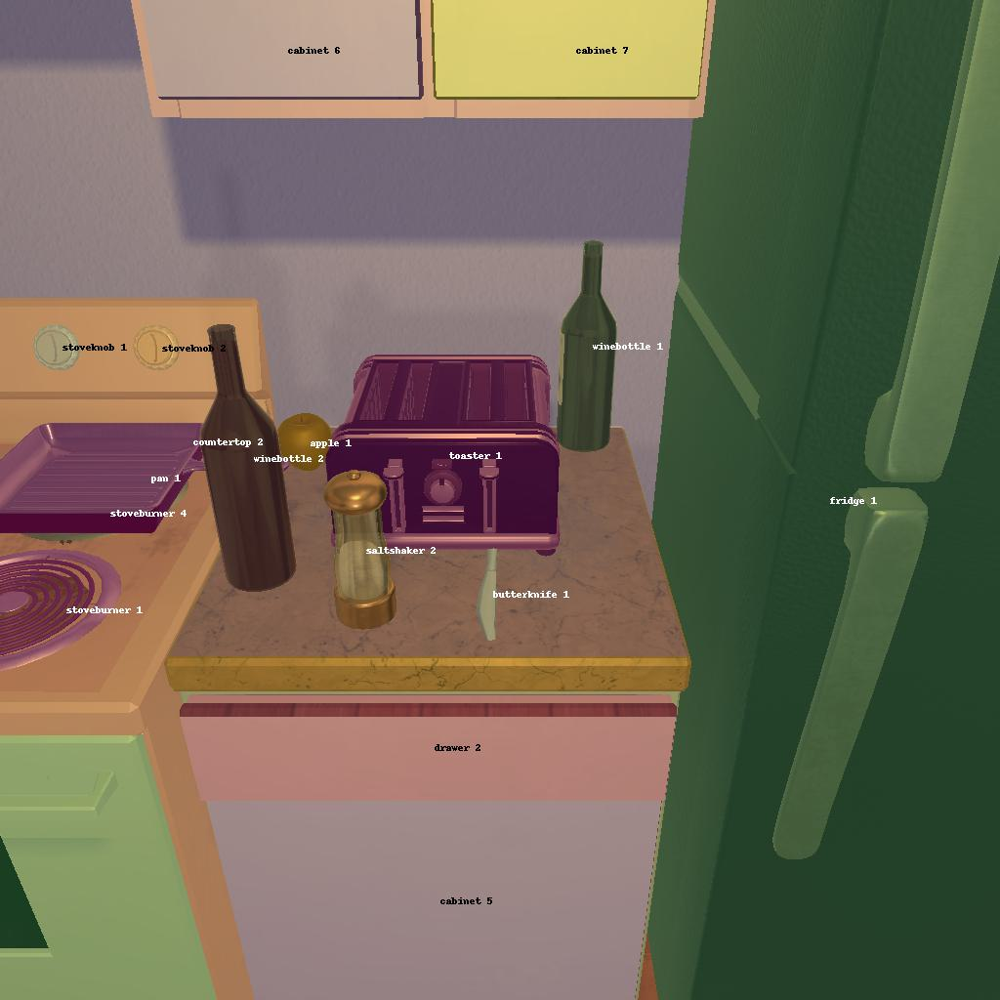

---------------------------------------------------------task: 14---------------------------------------------------------
--------------------------------------------------------------------------------------------------------------------------------------------------------------------
--------------------------------------------------------------------------------------------------------------------------------------------------------------------
Step:--------------------------------------------------------------------------4-------------------------------------------------------------------------------
----------------------------------------
VLM Prompt:
Image1:
Image2:
Image3:
**Instruction**
1. Analyze the provided image to identify all visible household objects, focusing on those relevant to the task description "put a cool apple in countertop."
2. Use the analysis of the image and the task hint "The agent must find an object of the desired type, pick it up, go to a fridge, cool the object with the fridge, then find the correct location to place it, and put it down there. The agent does not need to use the fridge button or open the fridge to cool the object, and the agent just needs to do action that is "cool the object with the fridge"." to answer the question: what is the most reasonable action in the choices for the task description "put a cool apple in countertop"?
4. Decide and write the answer using the template: The answer is: (i): , where i is the real number. If there is no desired object in the image, search every place based on **Initial Observation** to find the object. And if no one is exactly correct, choose a similar answer.
**Initial Observation**
You are in the middle of a room. Looking quickly around you, you can see microwave (1), countertop (1-2), cabinet (1-11), diningtable (1), drawer (1-3), sink (1), sinkbasin (1), toaster (1), stoveburner (1-4), fridge (1), coffeemachine (1), garbagecan (1)
**Answer Choices**
(1): go to microwave 1
(2): go to countertop 1
(3): go to diningtable 1
(4): go to drawer 1
(5): go to sink 1
(6): go to cabinet 3
(7): go to sinkbasin 1
(8): go to cabinet 4
(9): go to cabinet 5
(10): go to drawer 2
(11): go to toaster 1
(12): go to cabinet 6
(13): go to stoveburner 1
(14): go to cabinet 7
(15): go to fridge 1
(16): go to stoveburner 2
(17): go to stoveburner 3
(18): go to stoveburner 4
(19): go to drawer 3
(20): go to cabinet 8
(21): go to cabinet 9
(22): go to cabinet 10
(23): go to coffeemachine 1
(24): go to cabinet 11
(25): go to garbagecan 1
(26): take pan 1 from countertop 2
(27): take winebottle 2 from countertop 2
(28): take winebottle 1 from countertop 2
(29): take saltshaker 2 from countertop 2
(30): take apple 1 from countertop 2
(31): take stoveknob 1 from countertop 2
(32): take stoveknob 2 from countertop 2
(33): take butterknife 1 from countertop 2
(34): examine countertop 2
**Answer**
Let's think step by step by following the instructions.
----------------------------------------
----------------------------------------
Original Response:
Firstly, we need to identify if there is an apple in the images provided. In Image3, we can see an "apple 1" on "countertop 2". Since the task is to "put a cool apple in countertop," we must first pick up the apple.
Next, according to the task hint, we do not need to use the fridge button or open the fridge to cool the object. We need to perform an action that is "cool the object with the fridge". Since there is no explicit action given for cooling the object with the fridge, we can assume that going to the fridge will suffice for the task.
Finally, after cooling the apple, we need to put it in a countertop. Since the image shows "countertop 1" and "countertop 2," and the task does not specify which one, we can choose either.
Based on the Initial Observation, after taking the apple, the next reasonable action would be to go to the fridge to cool it.
The answer is: (15): go to fridge 1
----------------------------------------
----------------------------------------
>>> Refine Original VLM Response and Get Pure Action: go to fridge 1
----------------------------------------
-----------------------------------------------------------------
Running time: 10.923809051513672 seconds
Total Money: 8.434940000000001
-----------------------------------------------------------------
-----------------------------------------------------------------
Text Observation:You arrive at loc 17. The fridge 1 is closed.
-----------------------------------------------------------------
UNSUCCEED